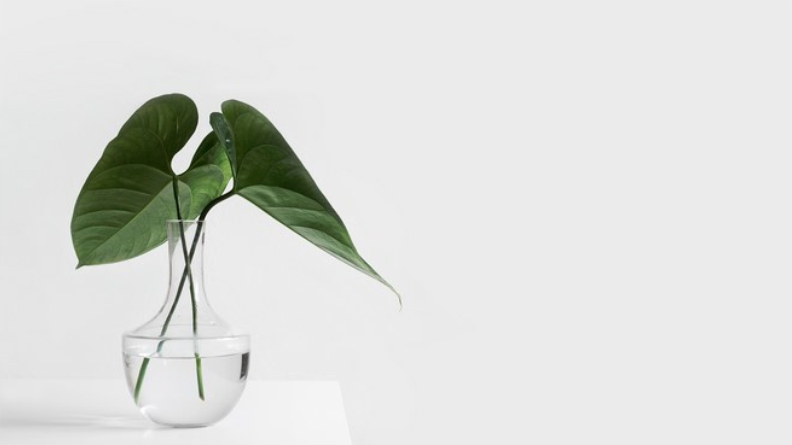

Simple Decorations

July 3, 2023 | 3 comments
Turning a house into a home often begins with the art of decoration. Yet, finding the perfect balance between bare walls and overwhelming clutter can be a challenge. Many individuals either shy away from decorating altogether or dive headfirst into an abundance of furnishings and accessories, only to find that their efforts fall short of creating the desired atmosphere.
However, there's a timeless elegance in simplicity that can transform any space into a welcoming haven. By embracing a minimalist approach to home decor, you can create a sense of tranquility and harmony that allows each element to shine in its own right.
A key principle of simple decorations is to let each piece speak for itself, drawing the eye to its unique beauty and charm. Instead of overcrowding a room with an excess of furnishings and knick-knacks, opt for a few carefully curated items that capture your style and personality.
Choose decor pieces that are both functional and visually appealing, such as sleek furniture with clean lines, minimalist artwork, and statement accents that add a touch of character to your space. By keeping the overall aesthetic clean and uncluttered, you'll create a sense of openness and serenity that invites relaxation and contemplation.
Another aspect of simple decorations is strategic placement to draw attention to focal points and create visual interest. Whether it's a stunning piece of artwork above the mantel, a cozy reading nook bathed in natural light, or a thoughtfully arranged vignette on a side table, simplicity allows each element to stand out and make a statement.
Moreover, simplicity in home decor extends beyond aesthetics to encompass functionality and practicality. Choose versatile pieces that serve multiple purposes and adapt to your changing needs, and invest in quality materials and craftsmanship that withstand the test of time.
In essence, simplicity in home decor is about creating a space that reflects your personal style and brings you joy without overwhelming the senses. So, let's embrace the beauty of simplicity in our homes, allowing each carefully chosen piece to shine and infusing our living spaces with warmth, charm, and timeless elegance.
REDUCE TEXT